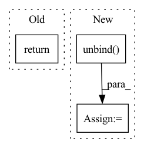

Pattern ID :2222
Before Change
layer_output_list = layer_output_list[-1:]
last_state_list = last_state_list[-1:]
return layer_output_list, last_state_list
def _init_hidden(self, batch_size, image_size):
init_states = []After Change
-------
last_state_list, layer_output
cur_layer_input = torch.unbind( input, dim=int(self.batch_first))
if not hidden_state:
hidden_state = self.get_init_states(cur_layer_input[0].size(int(not self.batch_first)))
seq_len = len(cur_layer_input)
layer_output_list = []
last_state_list = []In pattern: SUPERPATTERN
Frequency: 3
Non-data size: 3
Instances Fragment ID: 14198952
Project Name: openclimatefix/metnet
Commit Name: 12d0ea12a39fb28fca3d382611857f23f060b5b6
Time: 2022-02-01
Author: jacob@bieker.tech
File Name: metnet/layers/ConvLSTM.py
M Class Name: ConvLSTM
N Class Name: ConvLSTM
M Method Name: forward(3)
N Method Name: forward(3)
M Parent Class: nn.Module
N Parent Class: nn.Module
M File Name: metnet/layers/ConvLSTM.py
N File Name: metnet/layers/ConvLSTM.py
M Start Line: 149
M End Line: 188
N Start Line: 160
N End Line: 182
Before Change
super().__init__()
def forward(self, x):
return x
After Change
def forward(self, x):
assert x.shape[-1] == 3
channels, positions, values = x.unbind(dim = -1)
channel_emb = self.channels(channels)
position_emb = self.positions(positions)
value_emb = self.values(values) Fragment ID: 14198939
Project Name: lucidrains/transframer-pytorch
Commit Name: 2b1b808d40fd2d08f5bcf446da69373e42da1a9b
Time: 2022-08-19
Author: lucidrains@gmail.com
File Name: transframer_pytorch/transframer_pytorch.py
M Class Name: Transframer
N Class Name: Transframer
M Method Name: forward(2)
N Method Name: forward(2)
M Parent Class: nn.Module
N Parent Class: nn.Module
M File Name: transframer_pytorch/transframer_pytorch.py
N File Name: transframer_pytorch/transframer_pytorch.py
M Start Line: 80
M End Line: 80
N Start Line: 117
N End Line: 135
Before Change
output.append(hidden_state)
// Stack the list of output hidden states into a tensor
output = torch.stack(output, 0)
return output
// --------------------------------------------------------------------------After Change
last_state_list, layer_output
input = self.input_dp(input)
cur_layer_input = torch.unbind( input, dim=int(self.batch_first))
if hidden_state is None:
hidden_state = self.get_init_states(cur_layer_input[0])
Fragment ID: 14198942
Project Name: openclimatefix/skillful_nowcasting
Commit Name: 02c5ceadd01484d6ac8bce848ff76446fe7a6917
Time: 2021-10-18
Author: jacob@bieker.tech
File Name: nowcasting_gan/layers/ConvGRU.py
M Class Name: ConvGRU
N Class Name: ConvGRU
M Method Name: forward(3)
N Method Name: forward(3)
M Parent Class: nn.Module
N Parent Class: nn.Module
M File Name: nowcasting_gan/layers/ConvGRU.py
N File Name: nowcasting_gan/layers/ConvGRU.py
M Start Line: 269
M End Line: 276
N Start Line: 196
N End Line: 221